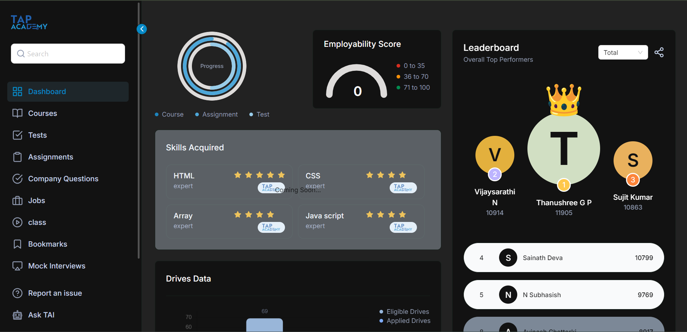
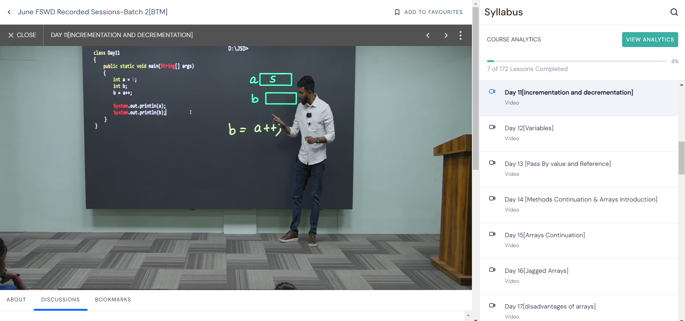
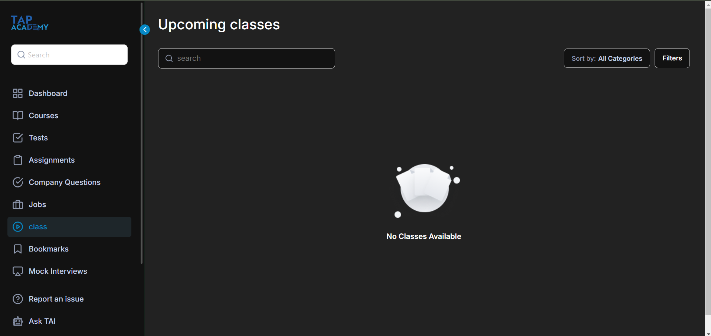
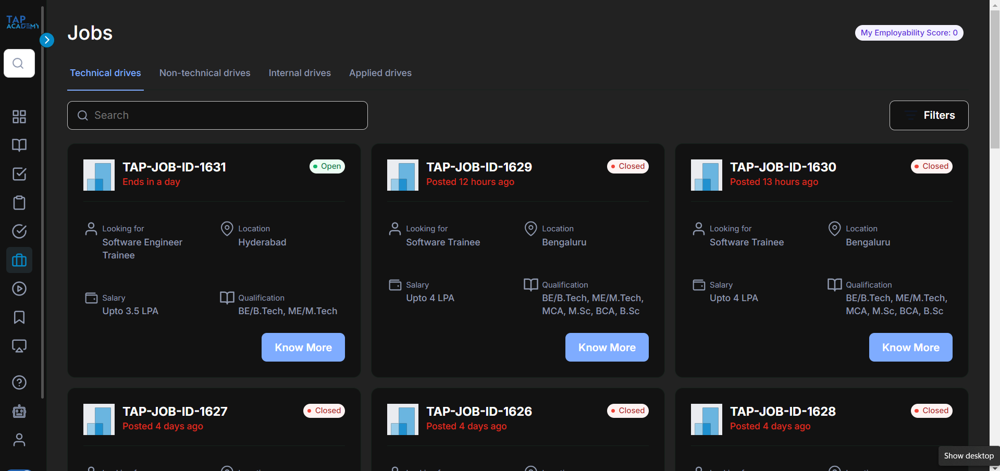

The Comprehensive Learning Experience at TAP Academy
TAI Platform for Coding Practice

TAP Academy's TAI platform is a standout feature, designed specifically for coding practice. The platform offers a wide variety of real-world coding problems that challenge students to apply theoretical knowledge in practical scenarios. Instead of just learning concepts, students are pushed to use their skills in hands-on problem-solving, which leads to a deeper understanding of programming. The interactive nature of the platform makes it an effective tool for building confidence in coding while preparing for real-world programming tasks.
LMS for Learning

The Learning Management System (LMS) at TAP Academy is a vital component of the learning experience.
It brings together all course materials, assignments, and progress tracking in one organized space,
ensuring that students have everything they need at their fingertips.
The LMS makes it simple to stay organized and keeps all resources readily accessible,
allowing students to review past lessons and track their own progress over time.
This ease of access plays a crucial role in continuous learning and revision.
Live Classes

TAP Academy’s live classes are highly engaging and interactive, providing real-time interaction between students and instructors.
These sessions are designed to foster a collaborative learning environment, where students can ask questions and participate in discussions as they happen.
The immediate feedback from instructors and the dynamic nature of the live sessions make it easier to understand complex topics.
It’s an opportunity to dive deep into subjects while benefiting from the collective insights of the class.
Drive Portal for Job Opportunities

One of the most exciting features of TAP Academy is the Drive Portal for job opportunities.
This platform connects students directly with potential employers, giving them access to internships and job placements that align with their skills.
TAP Academy doesn’t stop at just teaching – it helps prepare students for the job market with resume-building tips, interview preparation, and continuous career support.
The Drive Portal serves as a bridge between learning and professional development, offering a smooth transition from education to employment.